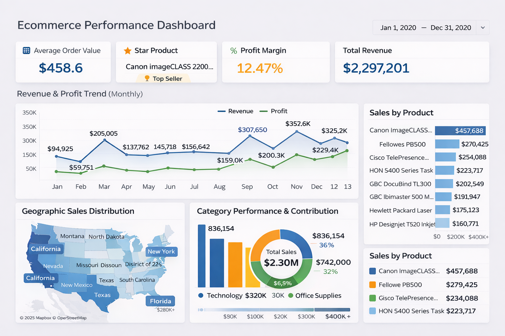

Interactive Sales & KPI Analytics
Developed an interactive Ecommerce Performance Dashboard in Tableau to provide end-to-end visibility into sales performance, profitability, and product insights. The dashboard tracks revenue, profit margin, average order value, and monthly growth trends, enabling stakeholders to quickly identify opportunities and optimize business strategy.
E-commerce businesses generate large volumes of sales data but often lack a centralized dashboard to monitor performance. Without clear visualization of KPIs, it becomes difficult to identify top-performing products, track growth trends, and make data-driven decisions.
